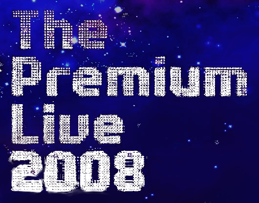
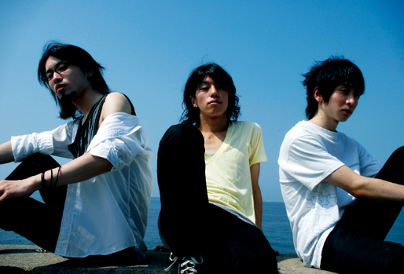

紅華祭に参加します！
Advanced Creatorsは東京工科大学・日本工学院八王子専門学校「第4回 紅華祭」において、以下の複数ステージで音響・照明・企画・模擬店を行います。
- メインステージ企画「The Premium Live 2008」
- サークルライブ「Mufes'08〜Music festival'08〜」
- 劇団こねこめにすたん「アルバトロス」
- アカペラサークル赤平「アカピライブ2008」
- 模擬店「はまーの手作りですけど、何か？」
- メインステージ・PAスタッフ参加
メインステージ企画「The Premium Live 2008」

紅華祭メインステージ史上かつてない、勢いとパワーあふれるパフォーマンスで皆さんを魅了します。
大学の学園祭という枠を超えた感動の空間をどうぞお楽しみください！
| 日時 | 10/12 (日) | 17:00 〜 18:30 |
|---|---|---|
| 会場 | 野外特設メインステージ | |
出演アーティスト

小野雄一郎(vo,g)、小澤秀明(b) 、渡辺裕次(dr)から成る3ピースバンド。繊細な心理描写と情景描写の表現が持ち味の歌詞。そして、キャッチでノスタルジックなメロディーは、誰もが経験したことのある“あの切ない感じ”を思い起こさせる。
下北沢を中心に精力的にライブ展開をしており、そのステージは静と動を織り交ぜた心身揺さぶるサウンドで、見る者全てにエクスタシーを感じさせるほどまでの刺激的なライブを繰り広げる。
その独特の世界観、耳に残るメロディーに引き込まれること間違いなしである。
サークルライブ「Mufes'08〜Music festival'08〜」
2日間ブッとおしで繰り広げられるライブ!!
軽音楽部とSound Genesisはもちろん、今年は総合音楽部jaclaとバトン＆ソングリーディングを行うStormy Tuneが加わります！Advanced Creatorsが音響を担当する合同ライブ、みなさん楽しんでください。
| 日時 | 10/12 (日) | 10:00 〜 17:00 |
|---|---|---|
| 10/13 (月祝) | 10:00 〜 15:40 | |
| 会場 | マクドナルド前 |
出演サークル
劇団こねこめにすたん「アルバトロス」
講実207で行われる、劇団こねこめにすたんの公演の音響と照明を、Advanced Creatorsが担当します。
| 日時 | 10/12 (日)、13(月祝) | |
|---|---|---|
| 11:00〜、14:00〜 ※30分前開場 | ||
| 会場 | 講義実験棟 2階 207教室 | |
出演サークル
アカペラサークル赤平「アカピライブ2008」
講A204で行われる、アカペラサークル「赤平」のライブの音響と照明を、Advanced Creatorsが担当します。
| 日時 | 10/12 (日)、13 (月祝) 12:00 〜 14:00 | |
|---|---|---|
| 会場 | 講義棟A 2階 204教室 | |
出演サークル
模擬店「はまーの手作りですけど、何か？」
Advanced Creatorsの4年生がお送りする、ツナマヨギョーザのお店です！
普通の餃子とは一味違う餃子、時間限定メニューもあります！詳しくは下のＨＰへ！
| 日時 | 10/12 (日), 13 (月祝) 10:00 〜 |
|---|---|
| 会場 | メインステージ前・図書館棟側 |
- 特設サイト

メインステージ・PAスタッフ参加
紅華祭実行委員会が募集したメインステージのPAスタッフに、Advanced Creatorsからも十数名の部員が参加します。
メインステージで行われる様々なライブやイベントの音響をします。
| 日時 | 10/12 (日), 13 (月祝) | 10:00 〜 18:30 |
|---|---|---|
| 会場 | メインステージ | |
- 主催
- 紅華祭実行委員会
- 参加団体
- 赤平、Advanced Creators 、クリオネ、紅華祭実行委員会、エアロビック部、Sound Genesis、Stormy Tune、専門学校軽音楽部、ダンシングカンパニー&TECアカデミー、東京工科大学軽音楽部、Happy Bear、祭.com(五十音順)
紅華祭公式サイト
紅華祭について詳しくは紅華祭公式サイトをご覧ください。
- 紅華祭公式サイト「紅華祭Web」